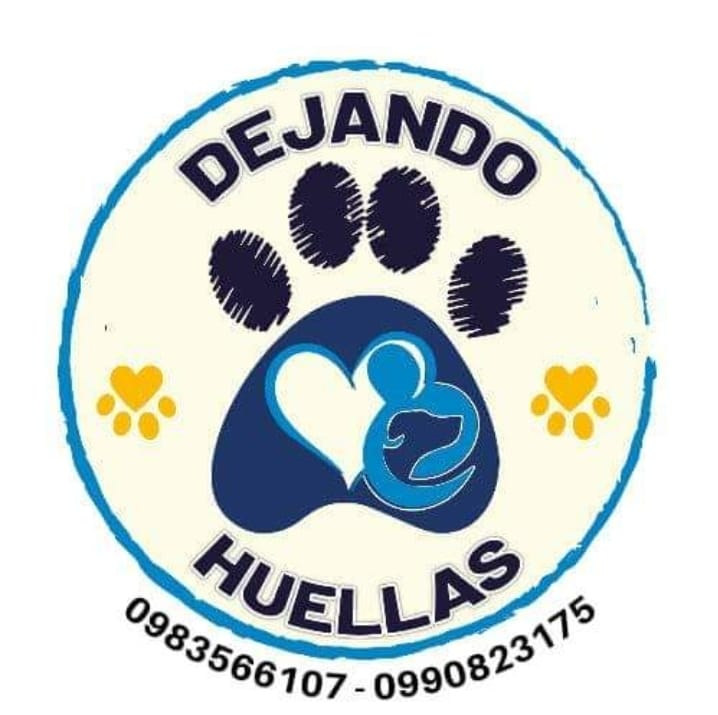
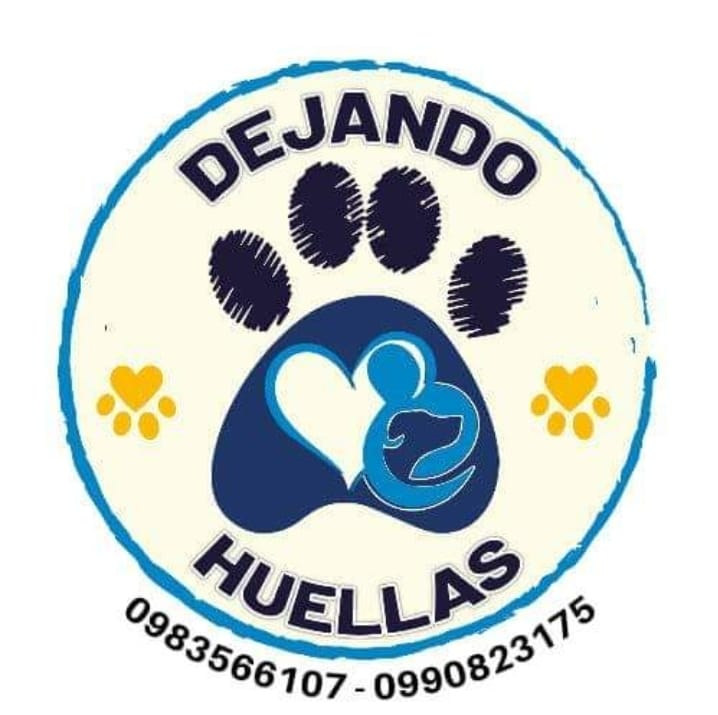

Dejando Huellas Palora
Voluntari@s que queremos crear conciencia en las personas acerca del cuidado a las mascotas.
"Paypal @dejandohuellascarola"
Voluntari@s que queremos crear conciencia en las personas acerca del cuidado a las mascotas.
"Paypal @dejandohuellascarola"
Compasión: La asociación se guía por un profundo sentido de compasión hacia todos los seres vivos. Este valor impulsa todas las actividades, desde el rescate de un animal en situación de calle hasta la educación de la comunidad sobre la importancia del cuidado y respeto por los animales.
Responsabilidad: Dejando Huellas Palora promueve la responsabilidad como un pilar fundamental para la tenencia de mascotas. La organización educa a la comunidad sobre la importancia de cuidar adecuadamente a los animales, asegurando que tengan acceso a atención médica, una dieta balanceada, y un entorno seguro.
Educación y Conciencia: La educación es clave para la misión de la asociación. Se realizan campañas y programas educativos dirigidos tanto a niños como a adultos, con el objetivo de fomentar una cultura de respeto y cuidado hacia los animales y el medio ambiente.


.jpg)

.jpg)